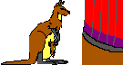
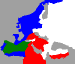

Welcome to the Diplomacy Showcase! This feature of The Diplomatic Pouch is intended to provide a venue for games of interest to the readership. These games are brought to you for your entertainment and edification by other members of the Diplomatic community at large. Some of these games are showcased for the purpose of elucidating specific topics. Others are hard to find or not well known variants. Some are showcased for the sheer delight of watching a fun and interesting game.
The games showcased here may be of any type, and from any medium (email, face to face, postal, judge or hand adjudicated). As a general rule, games will be placed in the showcase after they have been completed, but a very interesting game in progress might occasionally find its way in. Each game will consist of maps, broadcast press (and private press if available), and whatever else will help to make the game's special qualities clear.
If there is a game you would like to see in the showcase, let me know and I'll put it on the list after it's over. If you want to see a specific type of game in the showcase, get in touch and I'll see if I can find a good example. Showcase requests and questions can be directed to me, Nathan Barnes (nathan@diplom.org) . If you've got a game you'd like to suggest for inclusion into this document please read this and then email me.
|
 View Showcase
|